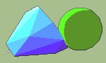

|  | Space Trader Centre |
|
Welcome to the Space Trader Centre. Here you can read about and download the latest version of the Palm strategy game "Space Trader". You can choose the frames version or the no frames version. The frames version works easier. Note: If you choose the frames version but can't see all the menu choices, switch to the noframes version. |